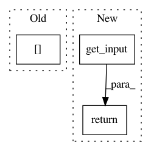

ee179f7da155c3cb8129b954db828906886ad4e4,keras/layers/core.py,AutoEncoder,get_input,#AutoEncoder#Any#,385
Before Change
def get_input(self, train=False):
if hasattr(self.encoders[0], "previous"):
return self.encoders[0].previous.get_output(train=train)
else:
return self.encoders[0].input
After Change
self.decoder.set_weights(weights[nb_param:])
def get_input(self, train=False):
return self.encoder.get_input(train)
@property
def input(self):
return self.encoder.input
In pattern: SUPERPATTERN
Frequency: 3
Non-data size: 3
Instances
Project Name: keras-team/keras
Commit Name: ee179f7da155c3cb8129b954db828906886ad4e4
Time: 2015-06-08
Author: francois.chollet@gmail.com
File Name: keras/layers/core.py
Class Name: AutoEncoder
Method Name: get_input
Project Name: mil-tokyo/webdnn
Commit Name: aa4d94ea6ffbbf1dcfaa567af3026232a2cb8ab9
Time: 2017-09-17
Author: y.kikura@gmail.com
File Name: src/graph_transpiler/webdnn/graph/operators/attributes/inplace.py
Class Name: Inplace
Method Name: get_input
Project Name: keras-team/keras
Commit Name: 2ab9f0ef616c6d05124bdf9c81eb542d73f8e5b6
Time: 2015-06-30
Author: francois.chollet@gmail.com
File Name: keras/layers/containers.py
Class Name: Graph
Method Name: get_input